-
Dentro de ti

Joel lleva un tiempo muy extraño, ve cosas que no son normales, siente cosas muy raras, fuera y dentro de su cuerpo, no sabe como explicarlo, hasta que decide grabar, lo que le pasa frente a una camara de video.
-
Cuatreros

- David Rudabaugh y John Wesley deberan afrontar el golpe de su vida, lograr llegar a la frontera antes que esta tierra inospita termine de malograr sus condenadas almas.
-
Catalepsia
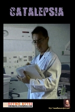
Es la 13ª pelicula de Cervantes Films, y trata de una persona que sufre un percance, y debera superarlo. ¿Lo superara? veanla no tiene desperdicio ninguno.
-
Maldición
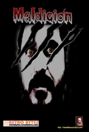
Paul (Jordi Soreras), decide ir con unos amigos, a ver la antigua casa abandonada de sus abuelos, que ahora adquirira de herencia, una vez alli ocurriran cosas muy extrañas.
-
Footing
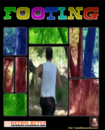
- Oriol (josé carlos Girón), es un chico que lleva una vida un poco extresada, y decide romper con el hastío y la rutina, decide hacer deporte.
- Tras semanas de ejercicio haciendo footing, la rutina parece perseguirle de nuevo.
- Oriol piensa que hay que seguir adelante, haciendo depoerte y corriendo cada vez más deprisa y más lejos, para intentar alejarse de todo cuanto le agobia y le hace ser pfedecible.
-
Romut
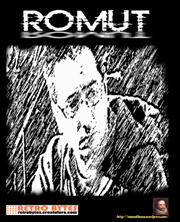
- Miki (Manuel Bueno) es un chico tranquilo, un joven apacible, social y buena persona.
- Un amigo decide invitar a miki a hacer una pequeña fiesta en el campo.
- Ilusionados y contentos disfrutan del día silvestre, cuando en el camino de vuelta a casa, a miki algo extraño le ocurre.
- ¿Será por la fiesta en sí?, ¿ o será algo más extraño?.
-
Polybius
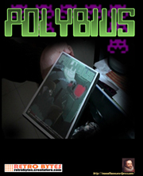
- Cuando una persona es muy friki y amante de los juegos de ordenador, a veces da lugar, que no sabes como salir de la atmósfera en la que te encuentras.
- Un antiguo juego, una leyenda urbana, un pedido inesperado, Martín (Jordi Soteras) recibe un juego llamado Polybius, un juego que no pensaba recibir, la sorpresa fue tan grande, que no pudo contenerse y jugó hasta el final, sin importarle las consecuencias.
- ¿Qué es a veces un juego?
-
8 bits
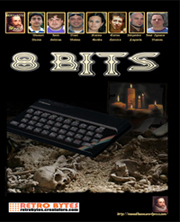
- A kend le queda poco tiempo...
Un tiempo que sus amigos si tienen pero él ya no. - Antes de pasar a la otra dimensión quiere dejar a sus amigos lo que más aprecia de toda su vida, lo que más quieren ellos en este mundo.... su tesoro.
- Para ello TOMMY, AARÓN Y VALENTÍN deberán encontrar la pista que les lleve hasta la casa que todo lo tiene, y descrubir cuál es el tesoro de su amigo.
- Pero hay un problema un problema que desconocen pero que acabarán descubriendo por ellos mismos en cuanto lo tengan en sus manos y es que como Ken sabe muy bien...
- EL TESORO A MEDIAS NO VALE NADA.
-
Dark of Place
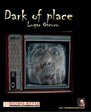
- En el pueblo de Viladecans, Jimmi una buena persona y muy trabajador, todos los vecinos le tienen en gran estima.
- Queda con unos amigos para hacer un picnic, pero al salir de casa algo le cambiara la vida para siempre.
- ¿Has despertado alguna vez, deseando estar muerto?
-
Quiero salir
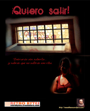
- Ada, psicóloga del psiquiátrico de Burgos se encuentra ante un paciente mu especial. Hace años que su trabajo no le depara emociones, aburrida de casos monótonos de monótonas soluciones.
- Ante ella se encuentra alguien aturdido, desencajado, alquien que le oculta algo, algo que se lo come por dentro. Para Ada es un reto que no puede evitar.
- A través de los recuerdos la psicóloga indagará lo ocurrido hace doce años cuando su paciente, y un amigo deciden marcharse de casa donde sus vidas eran un infierno.
- Pero nunca fué tan malvada la paradoja......
-
Veneno, la sustancia prohibida
- Licoret S.A es una empresa de ambiciones, tantas que su nueva fórmula les lleva a la ruina. Insconcientes de su negligencia toman una flor por otra y elaboran lo que supone ser el licor definitivo; aparte de su gran sabor pretende curar enfermedades tales como la propia alcoholemia.
- Su fatal error sólo lo descubre el profesor Molina que intentará por todos los medios evitar la desgracia; se muere quien lo bebe, o genera yonkis asesinos.
-
Manía Ciega
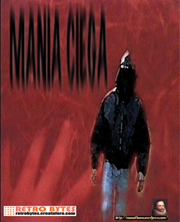
- La humanidad rehacia en creer que estamos solos en el universo, y nunca consiguio pruebas concluyentes de su realidad, ellos estan aqui, escondidos, viendo como la humanidad persiste con su misera maldad y sus ganas de propagar tragedias. pero quieren ayudarnos.... a su manera.
- Harold es un hombre incapaz de huir de su propia muerte. Dos
hombres sin escrupulos lo destrozan, cuanta más sangre se
derrame más placer van a sentir.
Pero no saben que éllos están ahí... escondidos para la venganza.... El cyborg prototipo EX900-E cumple su misión y recoge el cuerpo de harold para hacer de él un ser de venganza, un ser de justicia, un ser de otro planeta....
-
La Leyenda del Bosque 2
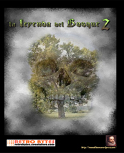
- Los medios se hacen eco de la tragedia, tres calcinadas figuras humanas aparecen en el bosque y ya se cuentan por decenas, las personas desaparecidas alimentando cada ves mas la leyenda urbana que se extiende por la zona.
- Los habitantes de viladecans viven angustiados por las pérdidas sufridas y por las que sospechan llegar, tan solo los mas jóvenes viven sin hacer caso maltratando el bosque con sus fiestas de poca moral.
- Dos amigos que ven la noticia deciden llevar a cabo una apuesta escépticos de lo ocurrido.
- para ellos todo son fábulas imaginarias y lo van a querer comprobar.
-
La Leyenda del Bosque
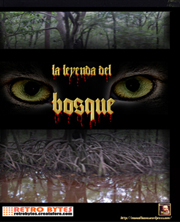
- Desde principios del siglo pasado la humanidad no ha dejado de evolucionar tecnológicamente.
- El ser humano nunca ha tenido en cuenta las malas consecuencias que esto conlleva.
- Tuvo que ser un grupo de jovenes quienes se dieran cuenta de ello, sin saberlo, queriendo descubrir que hay de cierto sobre la leyenda urbana, que cuenta por decenas las desapariciones de jovenes a principios de los setenta, en un modesto bosque de Viladecans, Barcelona
-
La Pensión Sangrienta
- El pensionista sangriento tiene sed.
Como cada fin de semana necesita saciarla y para ello se hospedará en pensiones de toda españa, una tras otra, para acechar a las pobres víctimas indefensas que nada saben de sus intenciones. Noche tras noche consigue su cometido y nadie sospecha de él ni ha conseguido nunca delatarle. - Por eso, el misterioso devenir de la vida pone a cada uno en su sitio, pero......
- ¿Que pasa cuando es imposible que una persona lo haga?
-
Logos y otros proyectos
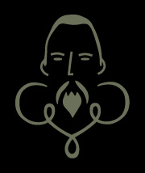
- Logotipo Manuel Pernia 1994
- Logotipo 2004 voz Manuel Bueno
- Logotipo Leyenda 2
- Logotipo voz Manuel 2006
- Logotipo de 2007 voz de Jordi y Manuel Bueno
- Los últimos 2010
- Logotipo 2013
- Tintorera
- La hora muerta
- Mutan Baby
- Nicotina
- Libros de magia
- Guion de libros de magia
- Cartelitos
- La verdadera historia de Cervantes Films
- La burla
- Entrevista Jordi Soteras
- El espejo
- S.O.S la peli
- El indeseable